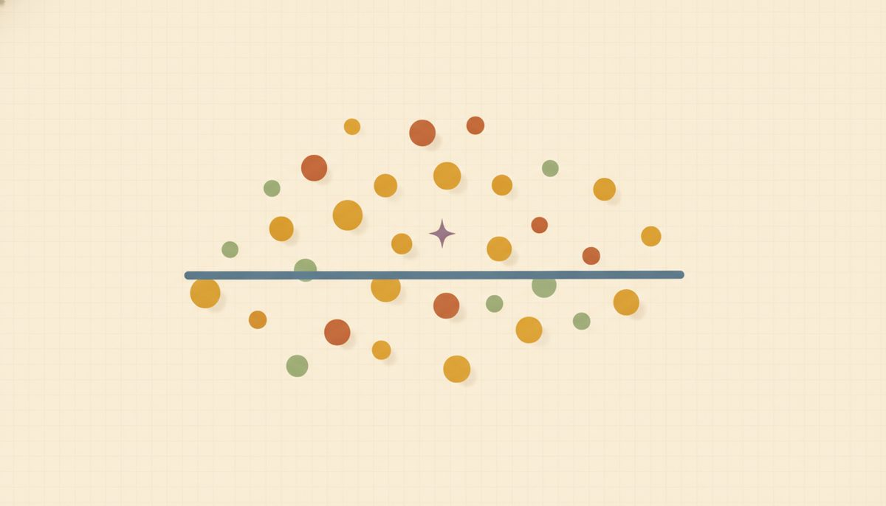

Scatter plots & line of best fit (a first taste of data)

Real data is messy. Measure ten people's study hours and quiz scores and the points won't sit on a tidy line. But a trend usually shows through anyway, and that trend is often all you need to describe what's going on and make a prediction. This lesson is your first look at handling data that way. Keep it light: it's a preview of Unit A (Data & Statistics), where these ideas get the full treatment. Here we just plant them.
The tool for capturing a trend is one you already have. A line of best fit is the linear function from Unit 5, the y = mx + b form, or f(x) = mx + b, laid through a cloud of scattered points so it summarizes them. So there's nothing new to learn here, just the everyday face of the line you already know how to read.
Begin with something concrete. Picture a handful of students, and for each one a pair of numbers: hours studied and quiz score. Say a couple of the pairs out loud, so they feel like real people before they become dots. One student studied 1 hour and scored 55, another studied 6 hours and scored 92.
Now the picture. Put each pair on a coordinate plane as a single point, the way you plotted points back in Lesson 5.1: one dot per student, and no line joining the dots. Here's that cloud of points with a line drawn through the middle of it 6.3.f1. The dots drift from lower-left to upper-right, and the straight line follows that drift without touching every dot.
When you look at a cloud like that, the first question is just its direction: does it rise, fall, or drift with no clear tilt? This one rises left to right, so we call the association positive: more study hours tend to go with higher scores.
That trend line through the middle is a single line chosen to summarize the whole cloud. It won't pass through every point, and it isn't meant to. It's a model of messy data, not a path that visits each dot. Because it's sketched by eye to run through the middle, a different reasonable person might draw a slightly different one. (A calculator's line-of-best-fit tool finds the single best one by formula; that's a Unit A job. Ours is close enough to work with.)
Once you have the line, predicting is just evaluating the function, the same skill from Units 4 and 5. If a best-fit line comes out as f(x) = 3x + 2, then predicting at x = 10 is f(10) = 3(10) + 2 = 32.
Two words go with prediction, and they're worth meeting once here. Predicting inside the range your data actually covers is interpolation, and it's the more trustworthy kind. Predicting outside that range is extrapolation, and it gets riskier the farther out you reach, because you're trusting the trend to hold where you have no points. Both terms come back in Unit A.
The most useful thing a trend line tells you is usually not the prediction but what the slope and intercept mean. Don't stop at the numbers. Take f(x) = 3x + 2 for (hours practiced, free throws made). The slope 3 is a rate: about 3 more free throws made for each extra hour of practice, the same "so much for every one" idea as d = rt in the last lesson. The intercept 2 is the predicted makes with zero practice, the value when x = 0. Reading those two numbers in plain words is what lets a line actually tell you something.
The easiest thing to overclaim here is cause. A trend showing two things move together does not prove one causes the other. Ice-cream sales and drownings both climb in summer, but ice cream doesn't cause drownings. Hot weather drives both. A trend is real and useful; it just isn't proof of a cause.
New words
- 6.3.d1 Scatter plot: a graph of paired data (x, y) plotted as individual points, with no connecting line.
- 6.3.d2 Association / correlation: the overall trend in the cloud of points. Positive: as x goes up, y tends to go up (cloud rises left to right). Negative: as x goes up, y tends to go down. No association: no clear up-or-down trend.
- 6.3.d3 Line of best fit (trend line): a single line drawn to pass as close as possible to all the points, summarizing the trend. It is a linear function, so you evaluate it to predict.
- 6.3.d4 Correlation is not causation: two quantities trending together does not prove one causes the other.
The point table for the scatter plot above is (1,55), (2,60), (2,68), (3,70), (4,80), (5,86), (6,92). The cloud rises, so the association is positive. In the examples below, pay special attention to how each one reads the slope and intercept back into the story.
Worked example
6.3.w1 Example 1: read the trend. The scatter plot above (hours studied vs. quiz score) rises from lower-left to upper-right. So the association is positive: more study hours tend to go with higher scores. Note "tend to": not every point obeys, which is exactly why it's a trend and not a rule.
6.3.w2 Example 2: predict, then interpret slope and intercept. A study finds the best-fit line f(x) = 3x + 2 for (hours practiced, free throws made). Predict the makes for someone who practices x = 10 hours by evaluating the function: $$f(10) = 3(10) + 2 = 32 \text{ free throws.}$$ The line is the model, so predicting is just the evaluation skill from Unit 5. Now read the parts in context: the slope 3 says about 3 more makes per extra hour practiced (a rate), and the intercept 2 is the predicted makes with no practice. One honest flag: if the data only ran up to a few practice hours, x = 10 reaches past it, so this prediction is an extrapolation. Trust it less than one inside the data's range.
6.3.w3 Example 3: negative association, prediction, and a causation caution. A best-fit line for (daily screen-time hours x, hours of sleep y) is f(x) = −0.5x + 9. Predict the sleep for someone with x = 6 hours of screen time: $$f(6) = -0.5(6) + 9 = 6 \text{ hours of sleep.}$$ The slope is negative, so this is a negative association: more of x goes with less of y. In context: the slope −0.5 means roughly half an hour less sleep per extra hour of screen time, and the intercept 9 is the predicted sleep with zero screen time. But hold the caution in mind: a downward trend doesn't prove screen time causes less sleep. Some other factor could be driving both. Correlation is not causation.
A natural slip here is reading the direction of a cloud off the signs of its numbers, calling a falling cloud "positive" because the values happen to be positive. After you've named one correctly, the self-check is to ignore the numbers and just watch the cloud: does it rise or fall left to right? That direction, not the sign of the values, is what positive and negative describe.
Two related habits to keep: don't connect the dots into a zig-zag (you want one summarizing line, not a path through each point), and don't expect every point to land on the line (real data scatters; the line is deliberately close-but-not-through-all).
Run one prediction before the practice set. For f(x) = 2x + 1, predict at x = 5: f(5) = 2(5) + 1 = 11. Substitute and compute, the same evaluation you've done since Unit 4.
Check yourself
- 6.3.c1 Sketch in words what a scatter plot with no association looks like, and give a real pair of quantities you'd expect to show it. (A shapeless cloud with no rise or fall, points scattered every which way. One pair: a person's height and their phone number.)
- 6.3.c2 A town finds shoe size and reading level are positively associated in children. Does bigger feet cause better reading? Explain in one sentence what's really going on. (No. Older children have both bigger feet and more reading practice, so age drives both; it's correlation, not causation.)
- 6.3.c3 A best-fit line is f(x) = 0.5x + 60. Predict y when x = 20, and say whether the association is positive or negative. (f(20) = 0.5(20) + 60 = 70; the slope is positive, so the association is positive.)
- 6.3.c4 For the same best-fit line f(x) = 0.5x + 60 modeling (minutes of exercise x, resting heart-rate-recovery score y), explain in context what the 0.5 and the 60 each tell you. (One sentence each.) (The 0.5 is a rate: about half a point more recovery score per extra minute of exercise. The 60 is the predicted recovery score with zero minutes of exercise.)
A mix of conceptual and prediction problems follows. Conceptual ones ask you to name an association or judge a causation claim; the rest hand you a line to evaluate. Answers are at the end of the lesson, and the matching worked example sits just above if you get stuck.
Conceptual:
Reveal answer to problem 1
(a) negative (more exercise tends to lower resting heart rate); (b) negative (older car, lower price); (c) none (height and phone number are unrelated).Reveal answer to problem 2
It draws a single straight line that best summarizes the overall trend so you can describe it and predict; it won't hit every point because real data scatters — the line is a model of messy data, not a connect-the-dots path.Reveal answer to problem 3
False — correlation shows two things trend together, but a hidden third factor (or coincidence) can cause the trend; correlation is not causation.Reveal answer to problem 4
Negative association (the trend falls as x increases).Predictions (evaluate the given best-fit line):
Reveal answer to problem 5
f(4) = 3(4) + 2 = 14.Reveal answer to problem 6
f(15) = -2(15) + 50 = 20.Reveal answer to problem 7
f(20) = 0.5(20) + 60 = 70.Interpret & range (in context):
Reveal answer to problem 8
Slope 12: each extra hour worked adds about $12 to earnings (a rate, $12 per hour); intercept 0: with 0 hours worked, predicted earnings are $0.Reveal answer to problem 9
Interpolation — x = 4 sits inside the data's range (1 to 6), so it's the more trustworthy kind of prediction; an extrapolation reaches outside the data and is riskier.You can now turn a phrase or sentence into algebra by naming the variable in words and reading the structure. You can set up and solve the four classic word-problem families with one method and check against the original wording. And you can read a scatter plot: naming its association, predicting from a best-fit line, saying what its slope and intercept mean, telling interpolation from extrapolation, and remembering that a trend isn't proof of a cause.
Those last data ideas are the on-ramp to Unit A, and the setup habits here are what mature into two equations in two variables in Unit 7.